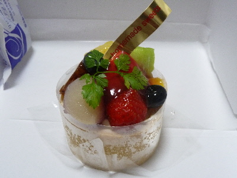
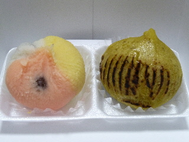
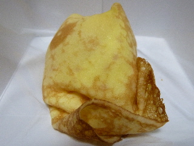
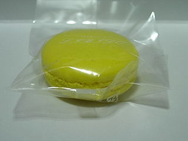
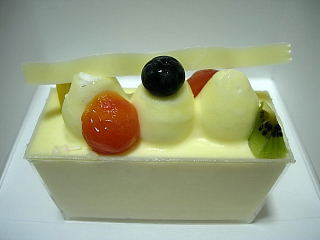
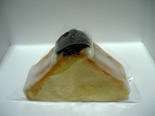
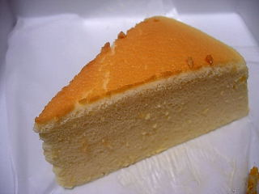

リビドー出雲店のフルーツのケーキ。
2016/08/09
いろんな種類のフルーツが乗ったケーキです。

フルーツ美味しかったです。
中にはクリームが入ってて、更に甘くて美味しかったです。 「ケーキを食べたー！」って気分になれました。
島根県出雲市大津新崎町1-23-2
2016/08/09
いろんな種類のフルーツが乗ったケーキです。

フルーツ美味しかったです。
中にはクリームが入ってて、更に甘くて美味しかったです。 「ケーキを食べたー！」って気分になれました。
2011/10/10
喫茶では以前から抹茶と和菓子があったと思いますが、販売も始まったみたいです。

洋菓子と和菓子とでろいろ選べるのはいいですね。
両方とも中にアンが入っていました。美味しかったです。
2011/03/09
最近はローソンのクリームたっぷりで甘くておいしいクレープにはまっていたので、あっさりした甘さのクレープは久々です。

中に苺が入ってて、爽やか甘さでした。
クレープ生地の味もちゃんとして、クレープらしいクレープだなって思いました。
2009/03/27
綺麗な黄色いマカロンです。

黄色ってことで、レモン味のクリームが入ってました。
とっても甘いんですが、ほんのりレモンの爽やかさがして不思議な味わいでした。
他にも何種類かマカロンがあったんですが、リビードーのマカロンは色が明るくて派手めで綺麗でした。
2009/03/26
透明なプラスチックケースに入ったレアチーズケーキです。

ケースに入っているくらいなので、中はクリームでいっぱいかと思ったらスポンジと果物が入ってました。
チーズの味がしっかりとしていて、美味しかったです。

こっちはおにぎりみたいなケーキ「アーモンドプラム」です。
しっとりとしていて、砂糖味がしっかりと効いたケーキでした。見た目が面白くていいですね。
2009/01/22
ちょっと切り口がギザギザのケーキでした。きっとたまたまなんでしょうね。

リビドーのケーキは甘さが強いイメージがあったんですが、このスフレチーズケーキはとっても優しい甘さでした。
スフレなのでチーズ味も軽く、ふんわりとした感じのケーキでした。
チーズケーキは苦手って人でも食べやすいかもしれません。
2006/09/06
9/1～9/10はリビドー出雲店で30周年記念大創業祭をしています。
だからといってそんなにお得なサービスはないんですけど、昔売ってたケーキを販売してるって事で行ってみました。
久々にたぬきの顔がついたケーキを食べたくなりました。
たぶんリビドーのたぬきケーキは食べた事ないと思うんですけど、なんか懐かしい感じがしていいなーって思って食べてみました。
味はシンプルにクリームとチョコ味だけで、超甘い感じでした。「うーん、昔よりも今のケーキの方がおいしいかな？」っていうのが正直な感想です。
2006/06/13
ザル豆腐みたいにザルに入ってて、目立つケーキを食べました。
ザルの中に紙がしいてあって、その中にクリームが入っているんですけど、紙はしっかりと砂糖水を吸っているので、不用意に触ると手がねちゃねちゃになります。注意しましょう。
見た目ザル豆腐っぽいのであっさりしたクリームチーズ風かと思ったら、生クリーム味で甘かったです。
わりと大きい商品なので、大量の生クリームを堪能できます。スポンジなんていらない！クリームが食べたいって時にはいい商品ですね。
2005/10/22
リビドーのとろけるプリンを食べました。
とろけるって感じよりも「どろどろ」とか「とろとろ」な感じがしました。
味は、卵の味はあまりしなくてクリーム味が強かったです。
プリンて感じよりカップ入りカスタードクリームな気がしましたが、カラメルが入るとやっぱりプリンだなと思いました。
クリーム味がしっかりあるので、あま～くなっています。リビドーの商品は甘いものが多いですね。
2005/10/21
リビドーのはんじゅくちーずを食べました。半熟って言うだけあって中はかなりしっとりとしていました。
しっとりとしてるので質量が多く、甘くて食べごたえがあります。でも小さいので負担になりませんでした。
あま～いケーキを食べて満足しました。
2005/07/30
出雲市大津町のケーキ屋「リビドー」でピーチパイ（150円）とさくさくパイ（150円）を買いました。
ピーチパイは桃餡？みたいなのが入ったパイで、さくさくパイは餡餅が入ったパイで、両方とも和風で変わった商品です。
食べた感じはデニッシュあんぱんの味に近いですね。ケーキ屋さんって言うよりパン屋さんな味がしました。
面白商品ですね。和菓子屋さんで洋菓子を売るのはよくありますけど、洋菓子屋さんで和菓子っぽいものを売るのってあまり見ない気がします。